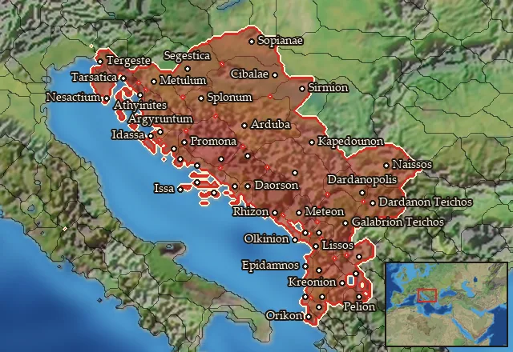

RTR: Imperium Surrectum
RTR: Imperium SurrectumRIS wiki › mercenaries
Illyrians
Main campaignRIS Light
← all mercenary pools · wiki index
Mercenary pool: 4 units for hire in 46 regions.

Mercenaries
| Unit | Cost (dn) | Experience | At start | Most in pool | Added per turn | Who can hire | |
|---|---|---|---|---|---|---|---|
| Mercenary Southern Illyrian Spearmen | 3,293 | 0 | 1 | 2 | 0.2506–0.5012 | Any faction | |
| Mercenary Southern Illyrian Axemen | 3,390 | 0 | 1 | 2 | 0.2434–0.4869 | Any faction | |
| Mercenary Southern Illyrian Skirmishers | 3,381 | 2 | 1 | 2 | 0.2441–0.4882 | Any faction | |
| Mercenary Illyrian Thureophoroi Cavalry | 3,661 | 1 | 0 | 1 | 0.2254–0.4508 | Any faction |
Regions (46)
Akrokeraunia · Amantinia · Anatolike Dardania · Andizetia-Azalia · Ardiaia · Autariataia · Basilike Dassaretia · Boreia Labeataia · Breucia · Byllionia-Amantia · Daesitiatia · Daorsia · Dardania · Dassaretia · Delmatia · Ditionia · Epetia-Salonitis · Epidamnia · Galabria · Gylakeia · Hesperos Skordiskia · Histria · Histria Septentrionalis · Iapodia · Illyria · Issa · Kaouia · Labeataia · Liburnia · Liburnia Orientalis · Liburnia Septentrionalis · Liburnonesoi · Maezaeia · Mania · Melaina Korkyra · Naissitania · Narensia · Olkinia · Orestike Dassaretia · Parthinia · Penestia · Savia · Seniensia · Sinus Liburnicus · Taulantia · Tragouria